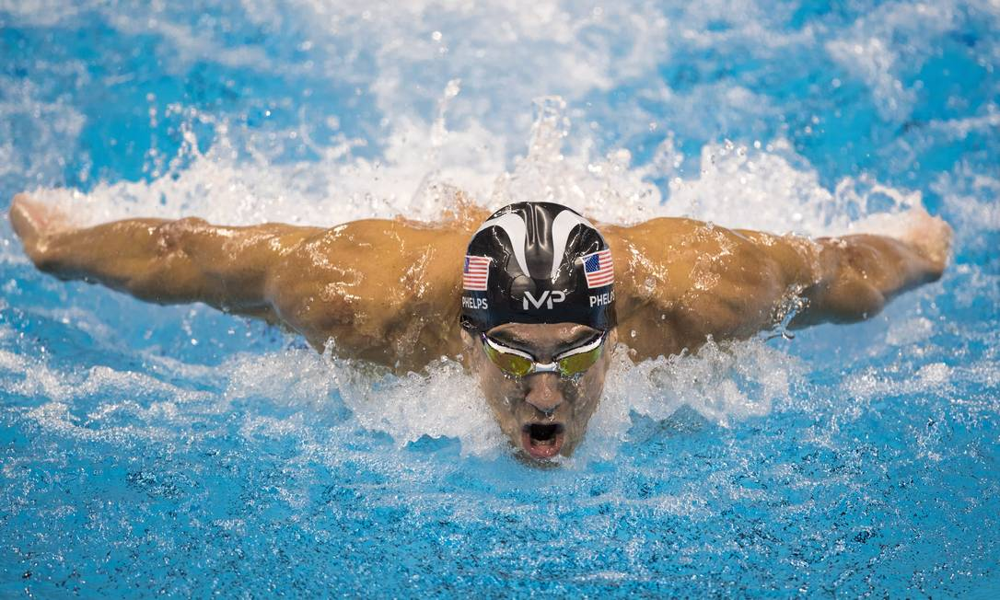
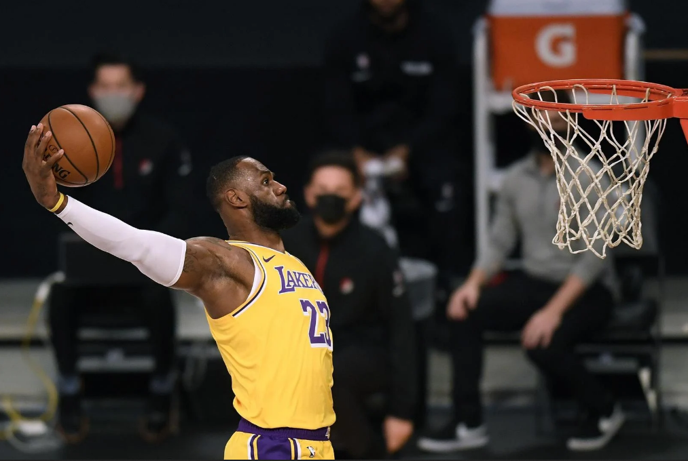
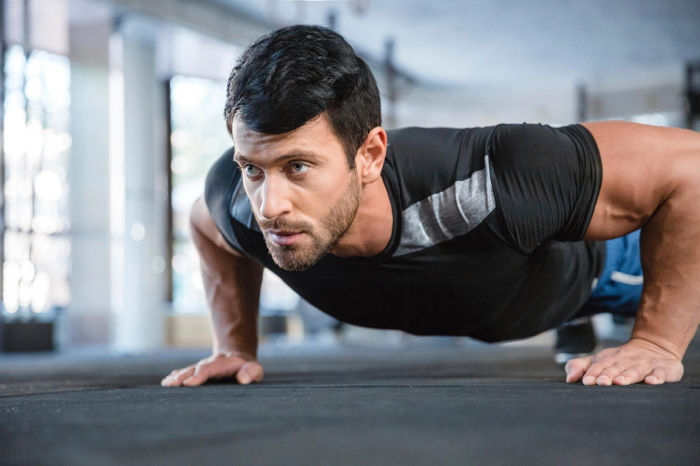

Minha Trajetória

Onde tudo começou
Minha primeira vivência esportiva foi na natação, onde desenvolvi disciplina, resistência e paixão pela competição desde cedo.

Desenvolvimento
Mesmo com pouco tempo na modalidade, o basquete me ensinou lições valiosas sobre trabalho em equipe, esforço coletivo e superação.

De volta á ação
Minha grande paixão, estava desdo começo do ano interessado

Aposentadoria-O Legado de um Atleta
Comecei por acaso, mas acabei me surpreendendo com o quanto curti correr e competir.